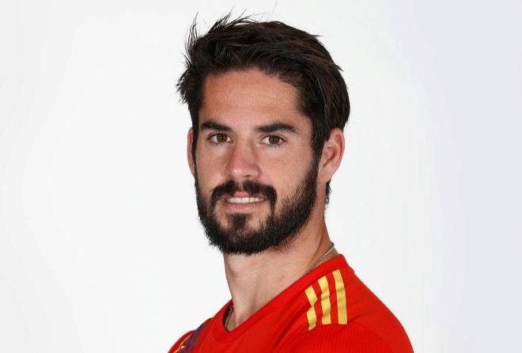

Francisco Román Alarcón Suárez (Arroyo de la Miel, Málaga, 21 de abril de 1992), conocido deportivamente como Isco, es un futbolista español que juega como centrocampista en el Real Betis Balompié de la Primera División de España. En el año 2012 fue galardonado con el Golden Boy, considerado como el balon de oro entre los futbolistas menores de 21 años, certificando su gran rendimiento mostrado en la temporada 2012-13 con el Málaga Club de Fútbol. Un año más tarde, se adjudicó el Trofeo Bravo, reconociéndolo como el mejor jugador joven del fútbol europeo. Ambos galardones se vieron complementados con la Bota de Bronce lograda en la Eurocopa Sub-21 de 2013, torneo en el cual la selección española se proclamó campeona. Se caracteriza por sus grandes pases y regate con el balón, además de su capacidad y visión del juego.